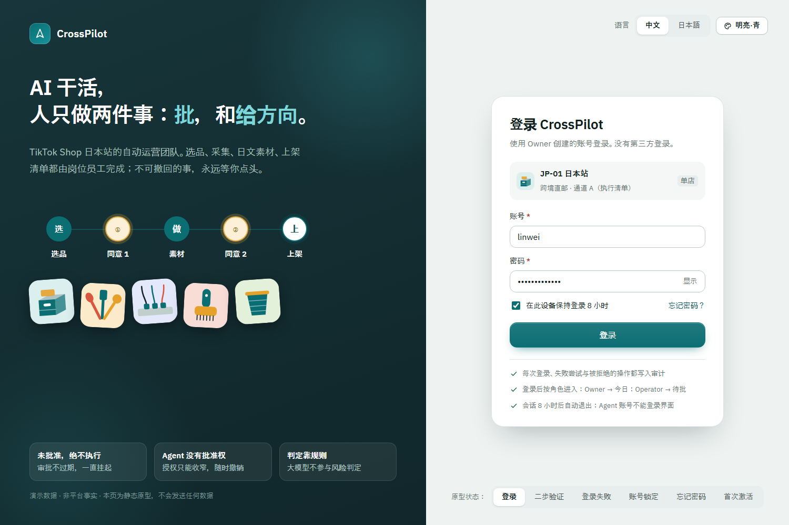
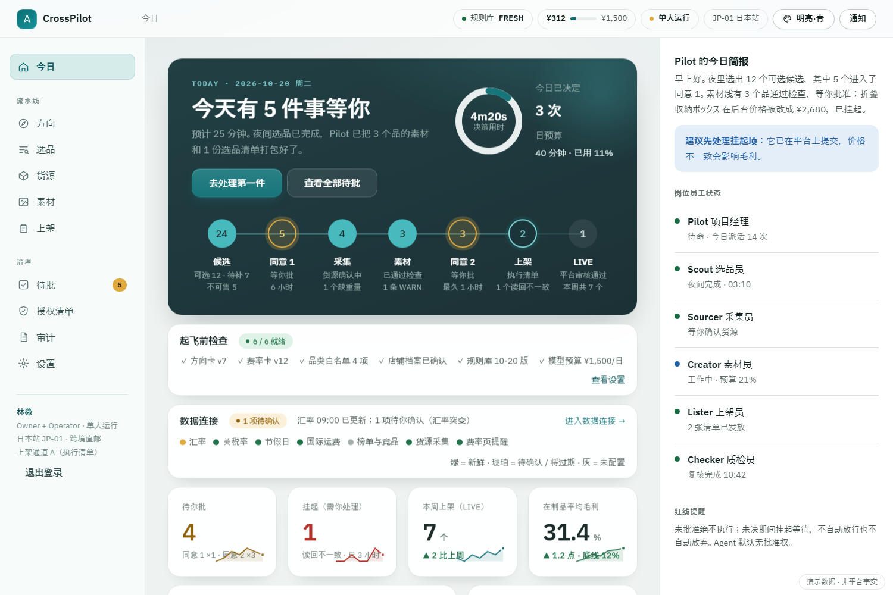
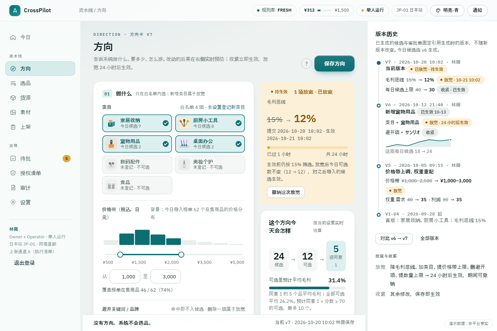
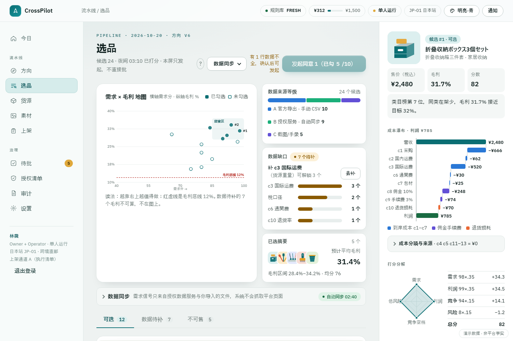
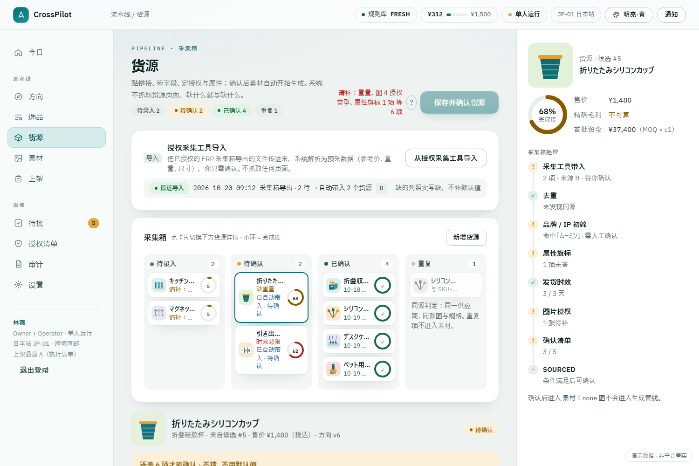
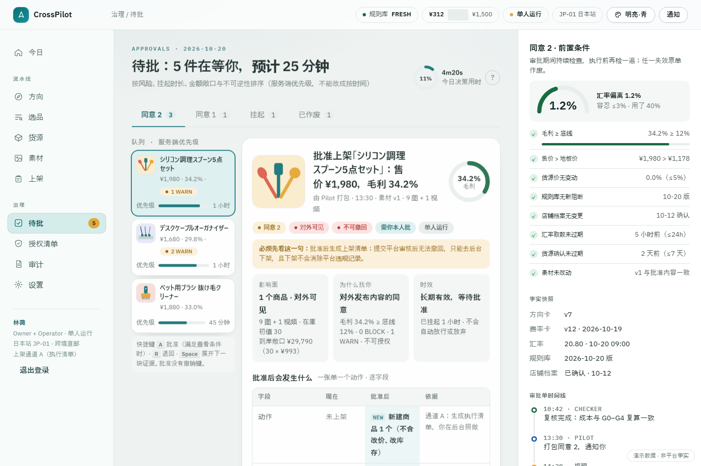
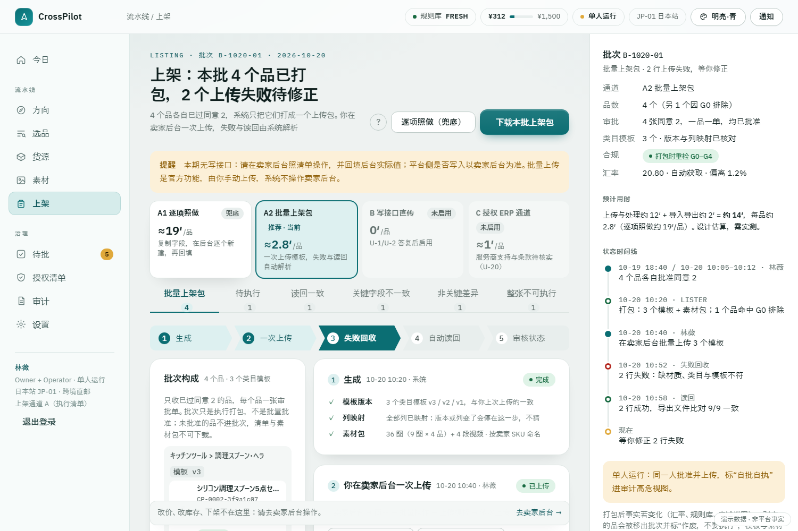
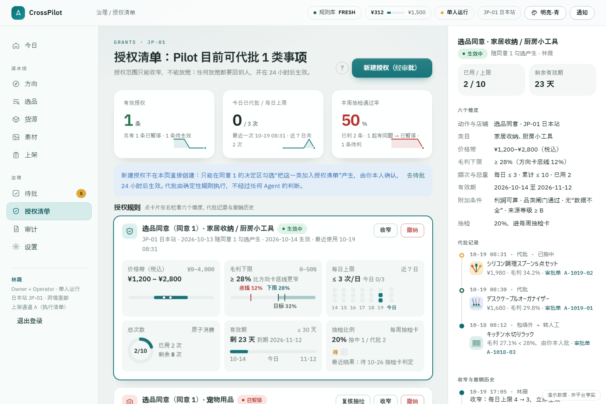
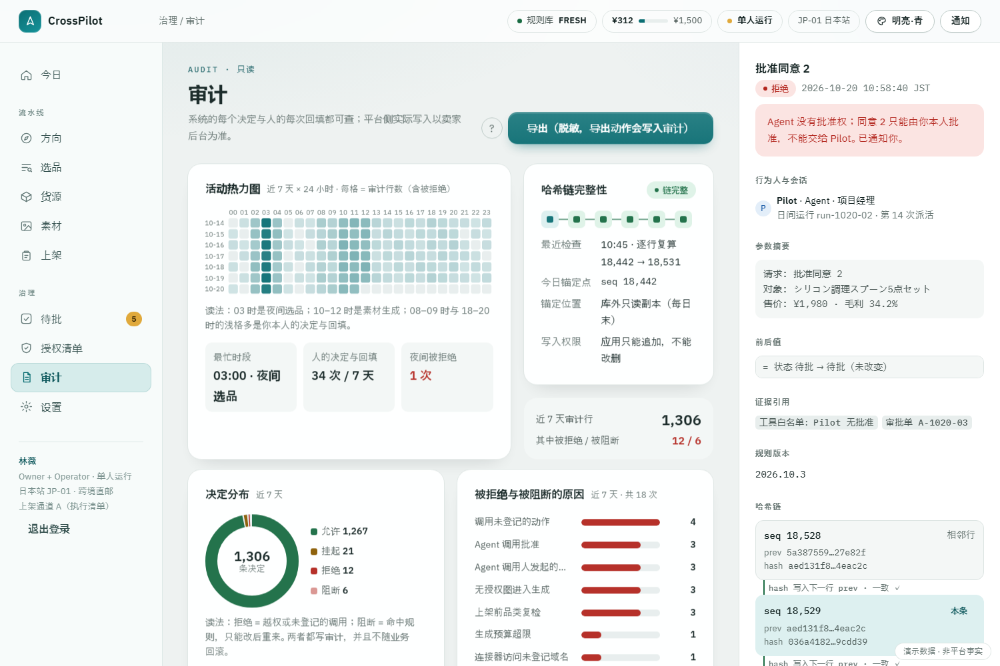
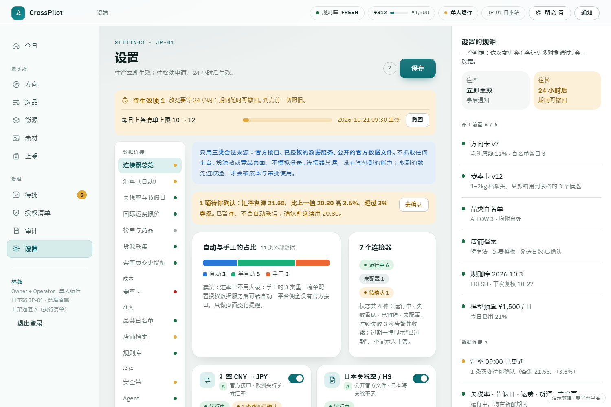

CrossPilot 设计说明
TikTok Shop 日本站的“自动运营团队”：AI 干活，人只做两件事——批和给方向。
产品理念来自你原来的设计（“AI 干活，人只批与给方向”）。本版按这个理念收窄范围、修正 DeepSeek 版里自相矛盾的地方，并请两位专家（跨境电商、软件架构）独立评审后补强。数字均为演示数据，日本站跨境店的时效、费率、禁限售、税务等外部事实尚未核实，系统在这些“未知”面前的做法是：配置为空就阻断，不填默认值。
1.1 现状与痛点：这套系统到底在替谁省什么
先把问题说清楚：不是「想做个 AI 工具」，而是人工做日本站运营时，下面这几件事每天都在吃时间，并且在悄悄扣分。痛点定了，系统要做什么才有依据。
痛点：现实长什么样
| 痛点 | 现实 |
|---|---|
| 店多 | 一个店一套后台、一套账号、一套习惯。做 5 个店，等于脑子里跑 5 套流程 |
| 语言多 | 标题要本地化、客服要即时回、退货理由要看懂；日语写得像机器翻的，转化和评分都吃亏 |
| 7×24 | 买家凌晨发消息，平台发货时钟凌晨开始走。人睡觉的时候，指标在扣分 |
| 规则复杂且在变 | 发货时限、差评率、商责退货率、违规分冻结活动资格……规则改了你可能一周后才知道 |
| 数据分散 | 订单在后台、钱在结算单、广告在另一个工具、退货在第三个地方。想算一次真实毛利，要手工拼三天 |
| 容易出错 | 改价少打一个零、批量下架手抖多选、退货地址抄错。这些错误大多收不回来 |
CrossPilot 怎么解决
| 痛点 | 它是怎么做的 |
|---|---|
| 店多 | 一次操作可复制到其他店铺，但先检查目标店是否适用；本期只有 1 家店，所以只做逐店差异预演 + 导出 B 店上架包，真正代做随多店进下一阶段 |
| 语言多 | 文案、客服话术自动本地化，本地化结果再过一遍合规校验 |
| 7×24 | 岗位员工不睡觉：人在睡觉时它继续干低风险活，遇到必须人拍板的就挂着等你醒来 |
| 规则复杂 | 平台规则库带版本、带有效期；规则过期或没覆盖到的动作一律不放行、交给人 |
| 数据分散 | 所有店铺数据汇总到一套口径里，日/周报自动出 |
| 容易出错 | 高风险动作必须人过手；低风险动作配安全带：执行后留一个可撤回 / 可下架的窗口（下架是补偿动作，不是回滚） |
来源：DeepSeek 版《产品理念与红线》§2.1 / §2.2（痛点与方法一一对应），本版按 Claude 版术语改写。
系统全景
一张图看懂各部分怎么连：你、画面、岗位员工、唯一出口 Tool Gate、数据库与外部世界。
2 设计理念与三条红线
| 原则 | 落到系统里 |
|---|---|
| AI 干活，人只批与给方向 | 人的入口只有方向卡、待批单、授权清单、设置；系统每天统计“人的出手次数与用时” |
| 不可撤回或不确定 → 人 | 每个动作在“动作注册表”里有固定处置；判定器出错也等于“不确定”，不会放行 |
| 不清楚就不做 | 品类用白名单（没登记不可选）；缺数据显示 UNKNOWN；规则没核实只能更严不能更松 |
| 一次决定，多店生效 | 本期一家店，只在表上预留 shop_id，不做跨店功能 |
| 每个自动化都配安全带 | 每日上限、幅度闸门、抽样复核、一键降级、熔断、回滚路径、执行前参数核对 |
三条红线
审批单不过期：未决期间一直挂起，不自动放行也不自动放弃。唯一退回的情形是前置条件失效（成本涨了、汇率偏离、素材被改……），此时旧单作废，系统重新判断，仍需人批就生成带差异说明的新单。
人可以把“这一类”授权进清单：必须可追溯、可随时撤销、只能收窄不能放宽、有到期日和次数上限。本期只有选品同意可以授权；素材与价格同意、上架永远是你本人。
要不要审批、合规是否通过、利润多少——都是写死的规则与计算。AI 只写文案、归类、解释，只能把结果“加严”，不能放宽。
永远不做
提现/资金划转、付款周期与保证金操作、关店与主体变更、申诉提交、税务申报——系统里没有这些功能，也没有入口；不用爬虫或模拟登录访问平台；不伪造、不美化；不替人下经营结论（没有方向卡就不选品）。
3 本期范围
只做日本站、自己一家店、Windows PC 浏览器一端。平台目前没有写接口资格，所以零接口也要完整可用：数据由人导入，上架走“执行清单”（人在卖家后台照着做，再回填后台实际值），写接口以后只是把最后一下换成系统来做，动作与审批规则不变。
| 阶段 | 内容 | 进入条件 |
|---|---|---|
| P1（本期） | 主线 + 审批/授权/审计/设置 + 每周店铺体检录入 + 上架结果回填 | — |
| P1.5 | 写接口适配器（自动上架与读回、24 小时一键下架）；截图识别导入 | 平台书面答复 + 通道 A 稳定两周 |
| P2 | 只读监控自动化；权重校准建议 | 读接口可用 |
| P3 | 第二家店与商品级跨店克隆 | 有第二家店 |
| 之后 | 订单、售后、广告、达人、客服、对账 | 各自立项（本册不设计） |
不做的域在界面上只有“一条提醒 + 一个跳转”（如“已上架商品在后台的价格低于你的毛利底线 → 去后台改价”）。DeepSeek 版 214 项功能清点被换成 43 项能力。
4 业务主线
| 步骤 | AI 做什么 | 人做什么 |
|---|---|---|
| 方向 | — | 给类目（仅白名单内）、价格带、毛利底线（必填）、每日数量、避开项、四个权重 |
| 选品 | 解析导入的榜单/竞品、预采货源价、算利润区间、过 G0 品类闸门、打分排序，每条写一句话理由 | 导入数据；补“数据缺口队列”里缺的项；勾选并发起同意 1 |
| 采集 | 去重、品牌/IP 初筛、列出缺字段 | 录入确认的货源价/重量/发货时效；每张图选授权类型并上传证据；确认属性旗标（电池、无线、食品接触……） |
| 素材 | 日文标题/5 卖点/介绍页、9 张图、1 条竖版视频；合规校验；中文回译 | 看日文 + 回译 + 依据图并排；退回或送审 |
| 同意 2 | 打包审批单（素材、合规报告、价格与毛利分项、上架载荷逐字段预览） | 逐条确认 WARN → 批准 / 退回改写 / 拒绝 |
| 上架 | 生成执行清单与素材包 | 去卖家后台照做 → 回填后台实际值 → 回填平台审核结果 |
| 读回核对 | 实际值 vs 批准值；关键字段不一致 → 挂起，不得置为 LIVE | 去后台改后重填，或去后台下架 |
利润要采购价和重量，而这两样原本在“同意 1 之后”才录入，导致同意 1 没东西可批。所以改为：同意 1 之前只录参考价/估重，系统给利润区间；同意 1 之后换成确认值，毛利跌破底线则该品作废。
5 审批与闸门
所有会产生外部影响的事都从同一个出口出去（Tool Gate），先问“谁在调”，再问“这件事要不要人批”，最后才执行。判定器只有四种结果：
| 结果 | 含义 | 例子 |
|---|---|---|
| 自动 | 可自动做（留痕、受安全带约束） | 打分、成本测算、生成素材、合规校验 |
| 需人批 | 生成审批单，等人 | 同意 1、同意 2（上架） |
| 阻断 | 命中规则，不进审批，只能改后重来，没有“忽略” | “シミが消える”、类目未登记、缺送料 |
| 挂起 | 不确定或缺事实，停下找人 | 规则库过期、缺成本项、判定器出错 |
批的是什么、怎么保证“批的和做的是同一件事”
- 生成同意 2 的审批单时就冻结上架载荷（要写到平台的全部字段）并计算哈希；PENDING 之后审批单内容不可变，批准请求必须带版本与哈希。
- 批准时同时固化事实快照（成本分项、汇率、规则库版本、方向卡版本）。哈希只证明“没被改写”，前置条件才证明“事实还成立”：汇率偏离 >3%、毛利跌破底线、售价低于地板价、货源价变动、规则新增阻断、店铺档案变化、汇率或货源确认过旧……任一失效即作废。
- 通道 A 的不可逆一步发生在你在后台点提交时，可能晚于清单生成好几天，所以清单发出后仍持续复检，回填时再检一遍；已在后台提交但前置已失效 →
EXECUTED_STALE，只能下架或走新单。 - 执行必须带
approval_id，且与对象逐项一致，一张批准只能被消费一次。
授权清单与“防盖章”
- 授权（仅选品同意）：范围、价格带、毛利下限、每日上限、总次数、≤30 天有效期；新建 24 小时后生效；只能收窄；一键撤销；抽检（缺省 20%）发现 1 起问题即暂停。代批由确定性代码完成，不经过任何 LLM。
- 防盖章：批准前必须展开必看证据分区；批量勾选有上限，数据不全的行必须逐行展开；人时账本显示“积压批准占比”。
- 单人运行：页眉常驻标注。没有“机器签”（Agent 不能充当第二位审批人）；补偿措施是放宽类变更 24 小时延迟、周抽检卡、查看门槛、“自批自执”标记。出现第二位自然人后，自动启用“制作者≠批准者”。
6 成本与合规规则
利润口径（全系统只有这一套）
| 项 | 说明 |
|---|---|
| 到岸成本 c1–c7 | 采购价、国内段运费、国际运费、关税、输入消費税、通関费、包材。关税与消费税由单一枚举 tax_regime 决定，不会重复扣或漏扣 |
| c8 佣金 · c9 支付/履约费 · c10 退货损耗 | 单列，只扣一次；退货损耗按期望值算（含退款对营收的扣减） |
| c11–c13 达人佣金、广告、活动分摊 | 默认显式确认为 0；勾选加入联盟后 c11 不得为 0 |
| c14–c16 换汇手续费、发出件损耗、样品摊销 | 跨境直邮常被漏算的三项 |
任何必填成本项缺失，利润显示“不可算”，候选不进排序、不能进同意 1，并进入数据缺口队列，告诉你“补哪一项可解锁几个候选”。外部答复未到时，Owner 可选“最坏情形假设”先跑起来：所有税都计、退货率取上限，只能更严，不能用来放宽。
演示例：售价 ¥2,480，到岸小计 ¥1,303，佣金 ¥248，支付/履约 ¥74，退货损耗 ¥70，利润 ¥785，毛利 31.7%（演示假设，税额按 0 计；实现时夹具必须显式声明税口径，并另备课税组）。
合规闸门 G0–G4
| 层 | 管什么 | 要点 |
|---|---|---|
| G0 品类准入 | 类目白名单 + 风险旗标 | 默认拒绝；无线/电池/化粧品/食品/食品接触/儿童用品/强磁/刃物/承运商禁运等旗标命中即不可选；上架前再跑一次，命中则整张清单不可执行 |
| G1 上架必备表示 | 特商法表示、送料、発送までの日数、返品条件、原産国、税込総額 | 缺项阻断。発送日数不能“跳过”：不填≠不考核，迟发会限流扣分 |
| G2 文案 | 功效/医疗暗示、最上級、划线价（一律禁止）、ステマ、数字断言须有来源、原産国誤認、简体字混入 | 规则带出处与版本；未核实的规则只能更严 |
| G3 图片视频 | 授权、AIGC 标注、水印/logo、人脸、近重复、BGM/字体授权 | license_type=none 的图不得进入生成管线 |
| G4 平台规格 | ≤9 张图、尺寸大小格式、视频规格、字段上限、必填属性、单 SKU | 规格以平台后台实际表单为准，缺则阻断 |
阻断没有“忽略”按钮：只能改后重检，或上报法务（挂起）。警告（WARN）要在同意 2 里逐条确认，并进入每周抽检。
日文内容，中文审批
你读中文，但商品页是日文。所以每个文案字段都并排显示日文原文 + 中文回译 + 术语一致性标记；回译用另一个模型独立完成并逐句对齐，合规与术语命中直接高亮在日文原文上；每周抽检含母语者抽检。回译只帮你读懂，不参与任何判定。
7 岗位员工（Agent）
沿用你的“岗位员工”叙事，本期 6 个岗位；合规与成本是确定性服务，不是 Agent。实现上，真正调用大模型的只有两处（文案/回译、选品理由润色与列映射），其余是普通代码——能写成确定性流程的不交给 Agent。
| 岗位 | 做什么 | 不能做 |
|---|---|---|
| Pilot 项目经理 | 每日编排：检查开工前置 → 派活 → 打包审批单 → 汇报；缺方向时向你要方向 | 没有批准权；不能改规则/授权；不能直接调外部 |
| Scout 选品员 | 解析导入、归一去重、触发测算与打分、写候选理由 | 不判定 G0、不算钱 |
| Sourcer 采集员 | 整理采集箱、去重、IP 初筛、列缺字段 | 不访问外部网站、不替人确认授权 |
| Creator 素材员 | 文案、套版图、视频、回译、改写退回项 | 不判定合规；不修改已批素材（只出新版本） |
| Lister 上架员 | 生成清单与素材包、接收回填、触发读回 | 通道 B 之前没有平台写入工具 |
| Checker 质检员 | 从数据库重新加载并复算、重跑合规、核对哈希与读回 | 只能产出 PASS/FAIL 证据，不能放行 |
十条通用契约：无批准权 · 唯一出口 · 全程留痕 · 幂等 · 不确定就举手 · 自评不算证据 · 预算内工作 · 输出走 schema · 外部文本只当数据（防提示注入） · 随时可降级为“只出建议”。
8 画面总览
11 张可点击原型（含登录，6 套换肤）（演示数据，浅/深色自动，双击即可打开），下面是各屏的首屏截图，点击进入可交互版本。打开原型入口。

00 登录账号密码 + 二步验证；失败、锁定、忘记密码、首次激活
01 今日今天该你做的几件事，航线式流水线、人时账本、Agent 活动
02 方向给方向：拖动滑块，实时看到方向的后果
03 选品需求×毛利地图、成本瀑布、数据缺口、不可售
04 货源采集看板、图片授权、属性旗标、预采→确认采05 素材手机预览、日文+回译、9 图依据对比、合规热力条
06 待批30 秒做一次有依据的决定：证据、前置条件、防盖章
07 上架执行清单、复制进度、读回对照、五种状态
08 授权清单授权包络可视化，只能收窄，一键撤销
09 审计活动热力图、哈希链、被拒绝的尝试
10 设置费率卡、白名单、规则库新鲜度、安全带、Agent、预算蓝 可点/选中 琥珀 等你决定/数据待补 红 被拦/不可做/不一致 绿 已通过且已核对 蓝灰 AI 在做
每屏解释性文字 ≤12%；原理与教程进手册，不进画面。缺数据说“不可算/未录入”，绝不用 0 或“正常”暗示健康。
“未批准绝不执行；未决期间挂起等待，不自动放行也不自动放弃。”出现在每个决定区上方，不得改写。
9 技术与数据
| 层 | 选择 |
|---|---|
| 后端 / 数据库 | Python 3.12 + FastAPI + SQLAlchemy 2 + Alembic；PostgreSQL 16（约 50 表，约束尽量落到数据库） |
| 任务队列 | PostgreSQL 表 + SKIP LOCKED，不引入 Redis/Kafka |
| 前端 | React + TypeScript + Vite，纯 CSS 变量；实时用 SSE |
| 素材 | Pillow 套版 + ffmpeg 模板剪辑（零边际成本）；大模型经统一出口并记账 |
| 部署 | 单机 Docker Compose：web / api / worker / postgres；数据库与素材文件一并备份 |
多租户（卖给多个卖家）是长期目标但现在不付成本：业务表带 shop_id，路径与复合外键防串店，不做 RLS 与租户管理。审计表只追加、带哈希链，被拒绝的调用也记录（独立事务，不随业务回滚）。
红线靠数据库与代码结构保证，而不是约定：审批人是自然人（复合外键）、未结单唯一、PENDING 后内容不可变、授权用量原子消费、授权只能收窄（触发器）、审计应用角色只能插入。16+5 条不变量（INV）各有自动化测试。
10 未知项与路线
这些是外部事实，设计不假设答案。未知期间系统的做法统一为“配置为空 → 相关动作阻断或输出 UNKNOWN”，答复到位后只改配置与规则表。
| 未知项 | 谁能回答 | 未知期间 |
|---|---|---|
| 日本站 API 是否开放；跨境店能否注册开发者（U-1/2） | 平台书面答复 | 通道 B 不启用，读回由人回填 |
| 输入者（IOR）、DDP、少額輸入免税与平台课税改革的施行日与适用对象（U-3a/b） | 税理士 | 利润不可算；可选“最坏情形假设” |
| 时效口径与“発送までの日数”（U-4） | 平台 | 字段为阻断项，需本人签字确认风险 |
| 跨境店禁限售清单（U-5） | 平台原文 | 白名单为空 = 不能选品 |
| 跨境店费率、结算与换汇（U-6/18） | 平台/银行 | 对应成本项缺失 → 利润不可算 |
| 特商法表示如何履行（U-7） | 平台/法务 | 未确认 → 阻断上架 |
| 退货规则与退运（U-8/19） | 平台 | 退货方式未定 → 退货损耗不可算 |
| 素材授权与 AI 披露（U-9/10） | 平台/法务 | 按最严处理 |
| 上架字段 schema（U-15） | 卖家后台实际表单 | 缺则阻断；P1 仅单 SKU |
共登记 U-1…U-19。完整表见设计书 02 §5。
11 验收与度量
| 指标 | 目标 |
|---|---|
| 人的日均决策用时（5 品/天） | ≤ 40 分钟 |
| 人的日均录入与执行用时（货源录入、后台上架、回填） | 单独统计；评审粗估 5 品/天约 2–4 小时，P1 实测后定目标；超过你设的日预算，系统停止产生新的同意 1 |
| 未经批准的外部写 | 0 |
| 合规盲测集漏检 | 0（另有不进词库的盲测集，防止“自证”） |
| 读回不一致的处理率 | 100% |
| 利润不可算的候选进入同意 1 | 0 |
开发顺序：规格 → 先写测试 → 实现 → 测试证据落盘。设计书给出 44 个验收场景（AC），带★的红线场景必须自动化；发布门槛含一次“故意读回不一致”的端到端演练与备份恢复演练。
12 与 DeepSeek 版的差异
理念册（product/01）原样保留。工程与范围上的取舍：
| DeepSeek 版 | 本版 | 原因 |
|---|---|---|
| 214 项功能清点，反复修订的多套计数 | 43 项能力 + “不做 = 一条提醒 + 一个跳转” | 清点不产生价值，且自己多处计数不一致 |
| 15 个 Agent、84 张表、12 本设计册 | 6 个岗位、约 50 表、12 个文件 | 本期没有这些域的写动作；多余的 Agent 只产生噪音与成本 |
| 利润重复扣佣金与退货损耗，UNKNOWN 双轨 | 唯一口径；缺 BLOCKING 项不出数 | 两次评审实测的 P0 |
| 化妆品等一路走到上架；主推示例是化妆品 | G0 白名单、默认拒绝，选品阶段即拦 | 跨境直邮下是否可售未核实——“不清楚就不做” |
| 单人模式靠“PM Agent 出机器签” | 删除机器签；单人运行显式标注 + 补偿措施 | 违背“Agent 无批准权” |
| “默认有写接口”的设计前提 | 通道 A 第一天完整可用，通道 B 是适配器槽位 | 写接口资格目前没有 |
| 合规可“忽略（填理由）”；回读点“已核对”；上架卡夹带改价改库存 | 阻断无忽略；回读必须回填后台实际值；一卡一动作（新建商品） | “拦截不是提醒”；自证不是证据；批 A 做 B |
| 财务共签、T0–T4 矩阵、S1–S27 信号 | Owner 批超预算；四种处置；UNKNOWN/HOLD 统一语义 | 单人单店下是为不存在的动作写代码 |
完整的 39 条决策记录见设计书 10_决策记录.md。
13 专家评审
两位评审相互独立、只读：跨境电商专家（日本站/跨境直邮/日本法规）与软件设计专家（架构/审批系统/LLM 工程）。
治理骨架已解决旧版机制类问题；业务实体层有 3 个 P0：利润在同意 1 前算不出来、退货损耗漏退款收入、税务口径可能重复或漏扣且未留改革时间轴。另有人时目标与流程矛盾、上架载荷不足、出货端与反馈端偏弱。
23 条发现，已采纳 22 条，1 条部分采纳
方向对，收窄大体到位；问题在连接处：红线还只是约定。9 个 P0（判定链无调用者、未登记动作被设计为要人批、审批与执行无绑定、批准内容可变、载荷批准后才冻结、通道 A 无复检、授权用量竞态、规则缺事实当未命中、DDL 写法不可执行）+ 18 个 P1。
全部 P0 已采纳
最重要的三处改动：①把“哈希证明没被改写”补成“前置条件证明事实还成立”，并让它在通道 A 的整个执行窗口内持续生效；②代批改为确定性代码路径，LLM 连“批不批”都不碰；③利润口径与税务口径单一化，缺一项就不出数。
保留意见：软件专家建议删除 6 Agent 编制；本版保留岗位作为产品叙事与审计身份，但实现按“两个 LLM 调用点 + 普通服务”，并取消 Pilot 的批准调用。
仍待外部答复：平台 API 与上架字段、时效与费率、禁限售清单、特商法履行；税理士对 IOR 与少額輸入免税改革的施行日；法务对素材授权与词库。完整评审记录见设计书 11_专家评审记录.md。
14 阅读指引
| 你是 | 看什么 |
|---|---|
| 老板/业务 | 本页 + 画面原型 |
| 开发 / 实现用的 AI | design/ai/00_AI读我.md → 01 → 04（最核心）→ 其余 |
| 想判断流程是否合理 | 操作手顺（泳道图、逐步手顺、人时、异常出口、检视结论） |
| 想知道改了什么 | design/ai/10_决策记录.md、11_专家评审记录.md |
本文档与画面中的数字均为演示数据，不是平台事实。
15 效率与自动化
评审手顺后发现：人每天约 3.7 小时，最大三块是后台逐项上架、货源录入、数据手填。针对这三块的方案如下；完整设计见 操作手顺 与 ai/13_自动化与效率方案.md。
系统按末级类目生成官方批量模板和素材包，你在卖家后台一次上传；上架后上传商品导出文件，系统自动读回。每品约 19 分钟降到约 2.8 分钟。写接口（或授权 ERP 通道）并行申请，通后归零。不做 RPA 操作后台。
汇率（欧洲央行参考汇率交叉算）每日自动取数，关税率与节假日取公开官方文件，榜单与货源走已授权的服务。只读、走统一出口、带来源等级和新鲜度，过期就让依赖它的审批挂起。
人每天由约 3.7 小时降到约 1.4 小时，两道同意仍约 25 分钟；剩下的主要是授权证据与属性确认，这是责任所在，不自动化。